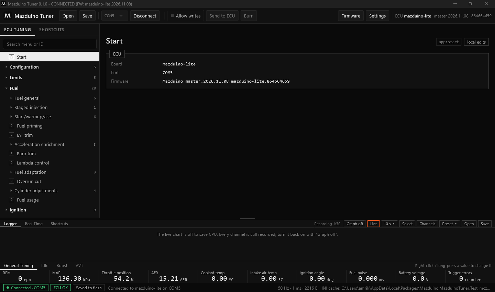
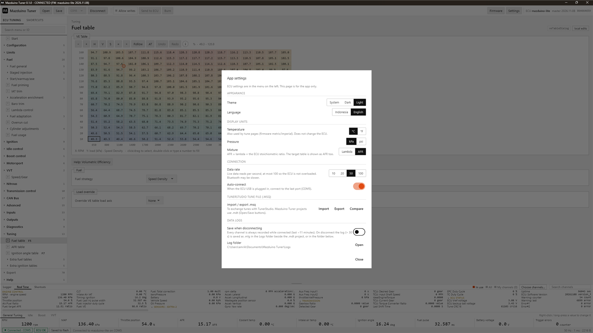

Terakhir diperbarui: 10 November 2026
Manual Mazduino Tuner¶
Mazduino Tuner adalah software tuning resmi untuk ECU Mazduino berbasis rusEFI. Software ini membaca definisi (INI) langsung dari firmware di ECU, jadi semua menu dan halaman selalu cocok dengan firmware yang terpasang. Firmware ECU juga bisa diupdate langsung dari aplikasi.

Versi alpha
Mazduino Tuner masih dalam tahap pengujian (alpha). Simpan selalu salinan tune Anda
(.mdt atau .msq) sebelum menulis ke ECU, dan jangan mengandalkannya untuk mesin yang
tidak boleh bermasalah.
Isi Manual¶
| Halaman | Isi |
|---|---|
| Instalasi | Unduh, pasang, dan jalankan pertama kali |
| Koneksi dan Tampilan | Menghubungkan ECU, toolbar, menu, panel bawah, status |
| Mengubah Tune | Halaman pengaturan, tabel dan kurva, Allow writes, Send, Burn |
| Proyek dan File Tune | Proyek .mdt, edit offline, tune laptop vs ECU, file .msq |
| Update Firmware | Update firmware ECU lewat USB dan memeriksa tune setelahnya |
| Logger dan Real Time | Data log, grafik, daftar channel, shortcut |
| Diagnostik | Error code, trigger logger, sniffer, CAN analyzer, tes silinder |
Kebutuhan Sistem¶
- Sistem operasi: Windows 10 atau 11 (64-bit)
- Koneksi: port USB untuk ECU Mazduino
- Hak administrator: tidak perlu untuk instalasi. Windows hanya meminta izin sekali saat driver USB bootloader dipasang (untuk update firmware).
Mazduino Tuner dibuat untuk ECU Mazduino dengan firmware Mazduino (rusEFI). Board rusEFI lain dan Speeduino juga bisa dibuka.
Instalasi¶
Langkah 1: Unduh installer¶
Buka halaman Releases Mazduino Tuner dan unduh file
MazduinoTuner-Setup-<versi>.exe dari rilis terbaru.
Langkah 2: Jalankan installer¶
- Klik dua kali file installer.
- Versi alpha belum ditandatangani (code signing), jadi Windows SmartScreen bisa menampilkan "Windows protected your PC". Klik More info, lalu Run anyway. Pastikan file memang diunduh dari halaman Releases di atas.
- Ikuti langkah installer. Aplikasi dipasang untuk user yang sedang login, tanpa hak administrator.
- Di akhir instalasi Windows bisa menanyakan izin untuk memasang driver USB bootloader STM32. Driver ini dipakai saat update firmware. Setujui; kalau dilewati, aplikasi akan memintanya lagi saat pertama kali update firmware.
Langkah 3: Jalankan pertama kali¶
- Buka Mazduino Tuner dari Start Menu atau shortcut desktop.
- Hubungkan ECU dengan kabel USB.
- Pilih port ECU (misalnya
COM5) di toolbar, lalu klik Connect.
Aplikasi membaca signature firmware, mengambil file INI yang cocok, lalu membuka menu sesuai board dan firmware. Lihat Koneksi dan Tampilan.
File INI tidak perlu dipilih manual
Untuk firmware Mazduino, INI diunduh otomatis sesuai signature dan disimpan di cache, jadi
berikutnya tidak perlu internet lagi. INI juga ikut tersimpan di setiap proyek .mdt.
Hanya untuk firmware yang tidak dikenal aplikasi akan meminta Anda memilih file INI sekali.
Pengaturan Aplikasi¶
Klik Settings di kanan atas.

| Pengaturan | Keterangan |
|---|---|
| Theme | System, Dark, atau Light |
| Language | Bahasa Indonesia atau English |
| Temperature / Pressure / Mixture | Satuan tampilan (°C/°F, kPa/psi, Lambda/AFR). Hanya tampilan; isi ECU tidak berubah. |
| Data rate | Berapa kali per detik data live dibaca (10, 20, 50, 100). Default 50, maksimal 100 agar ECU tidak terbebani. |
| Auto-connect | Langsung connect ke port terakhir saat ECU dicolok |
| Import / Export / Compare .msq | Bertukar tune dengan TunerStudio. Lihat Proyek dan File Tune. |
| Save when disconnecting | Simpan data log otomatis saat disconnect |
| Log folder | Membuka folder data log |
Lokasi File¶
| Isi | Lokasi |
|---|---|
| Pengaturan aplikasi, log koneksi dan update firmware, backup tune sebelum update | %APPDATA%\MazduinoTuner |
| Data log | Documents\Mazduino Tuner\Logs, atau folder Logs di samping proyek .mdt |
Uninstall tidak menghapus folder-folder ini.
Melaporkan Masalah¶
Buat laporan di halaman Issues dengan menyertakan:
- versi Mazduino Tuner (terlihat di judul jendela) dan firmware ECU (di kanan atas toolbar)
- langkah yang dilakukan dan apa yang terjadi
%APPDATA%\MazduinoTuner\connection.loguntuk masalah koneksi, atau%APPDATA%\MazduinoTuner\firmware-update.loguntuk masalah update firmware